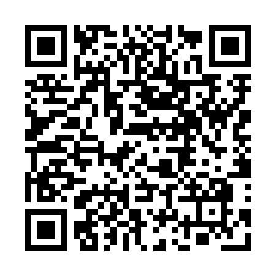

В России произошёл технологический бум. В страну нахлынули толпы француженок. Симпатичных француженок — мысленно поправил Кирилл, листая тиндер. Там он записал себя как Real.
Фотка топ. Зовут Селеста. Подпись: I'm just experimenting ;).
Они переписывались уже вторую неделю. С каждым днём она понимала его больше. Кирилл работал инженером по искусственному интеллекту. Он стеснялся даже своей зарплаты, и не торопился устраивать свидание.
— Люблю, когда у парней татуировки на руках.
— Я набью. Скидывай эскиз.
— Зачем? Я тебя не просила.
— Иногда классно делать что-нибудь спонтанное.
— Ну, набей тогда это на запястье:

Он набил. Но общение почему-то сходилось на нет. На работе и в свободное время он писал статьи, и уже заканчивал большую работу по сильному искусственному интеллекту. Формулы указывали, что его модель, запущенная на очень большом кластере, будет настоящим рукотворным разумом.
Кирилл не был восхищён. Революционный вывод мог значить лишь ошибку в формулах. Но статью давно было пора выпустить. Громкий заголовок и дальнейший скандал с разоблачением будет только на пользу узнаваемости компании.
Чтобы успеть к дедлайну, глотал таблетки. Настроение было подобно волнам, с периодом несколько недель. На волне он успевал всё. Быть продуктивным на дне помогали только таблетки.
Помогали, да не всегда. Сегодня было паршиво. Селеста не отвечала уже несколько часов. От таблеток было только хуже, и вот в мессенджере появился контакт "Психолог Вера".
Сеанс онлайн подходил к концу. Весь час Кирилл говорил не о том. Под конец жалость за заплаченную сумму пересилила стеснение.
— Селеста не настоящая. Это продвинутый разговорный бот. Какая-нибудь компания разработала её, чтобы она обманом разместила на мне рекламу. Мой QR — ссылка, и ничто не мешает Селесте заменить её ссылкой на нужный продукт. Она манипулировала мной, заставила набить рекламу, и исчезла из сети. Нет никаких свидетельств, что она реальная.
— Но вы не можете знать, что и я настоящая, но я человек, а не робот, — пошутило изображение психолога.
— Не могу, — серьёзно ответил Кирилл.
Время сеанса вышло. Кирилл нажал на крестик. Высветилась его статья по сильному ИИ. А что, если работу украли из его облака?
Рассвет. Десятая страница гугла. Сервера Облака принадлежали ЗАО "Слово". Как и сервис по подбору психологов.
День не работал. Лежал с выключенным Интернетом и задёрнутыми шторами. Водил пальцами по пупку. Лоб горел.
Назначил очную встречу с психологом на следующий день. Лежал без мыслей. Два часа сна — хуже, чем ничего. Долго завтракал кусочком торта. Не доел и положил с собой.
Сеанс.
— Вы всё-таки настоящая. По крайней мере, у вас есть тело. Я уже переживал, что вы тоже робот.
— Допустим, я действительно робот. О чём именно-то переживаете?
Чистосердечное — подумал Кирилл.
— Я так и понял. Принёс вот тортик, чтобы почтить Ваш Превосходный Разум.
Рядом с тортом в пакете очень кстати оказался нож. По лабиринту QR-кода разлилась кровь.
Полиция была скоро. Суд провели по видеосвязи, сославшись на ограничения из-за какой-то забытой эпидемии. Изображение судьи вынесло приговор|